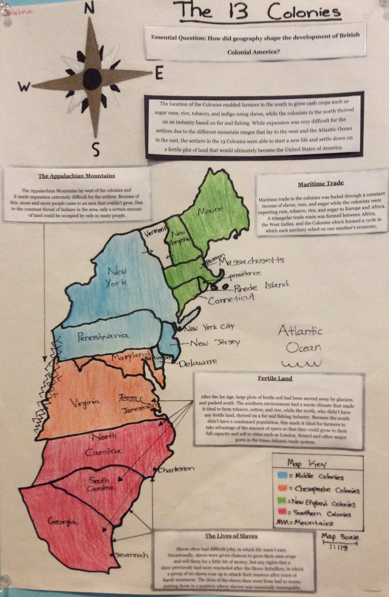

My first artifacts I would like to show are my artifacts from math. I feel like I have greatly improved in the classroom since the beginning of the year in terms of my tests and assessments. At the conference I will have my notes, one test and one chapter of homework with me to present.
I think I have had successes and challenges throughout the course of the year that have helped be become a better student overall. I think that some of my successes include my Chapter 6 Math Test and my 4.5-4.9 partner test. My notes have been consistenly good and once I start to understand the fundamentals of a concept I start to really enjoy the lesson (this is not just for math). Some of my challenges come when I either don't use my notes for homework or if I don't fully read the directions. This is evident because on a lot of my tests where I don't do a great job most of my mistakes come from misreading the directions or making silly mistakes. I think this is not difficult to fix because typically my problems don't stem from me not understanding the concept. I was talking with my mom and she told me that I need to look for mistakes like "a teacher grading a test", because this can help me with finding mistakes before it's too late. Another one of my goals is to continuosly use my notes on homework because this helps me understand different applications of a certain problem and this better prepares me for my tests.
My next artifact I would like to share is my Map Project from Social Studies. For this project, we created a map of the 13 colonies and annotated our maps referencing important geographical aspects of the Colonies and how they could be used for economical growth in the United States. I think this artifact relates to my strength (having organized notes) because I really used my annotations a lot for my project. The project helped me apply my annotations to something I really enjoy: geography. Also, my annotations help me understand how to analyze the text a bit better so I think this can help me on future essays.
For literature I have decided to show my Scarlet Letter Poem, and I would also like to talk about my 1-17 Literature quiz. I feel like I really need to improve on my analysis in my writing, in the sense that I need to do a better job of communicating my own thoughts to paper.
For Spanish I chose to show my video about things I do every summer. I decided to include this artifact because it was my favorite spanish project this year, and I did a good job on it.